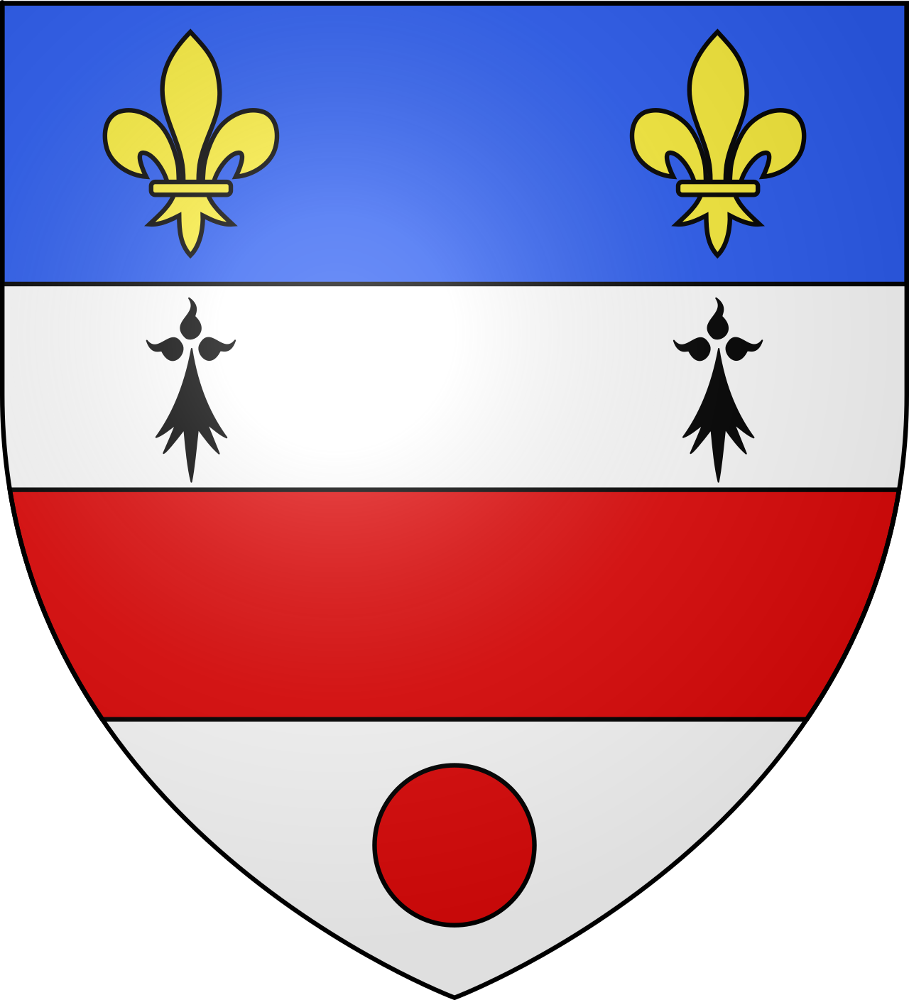
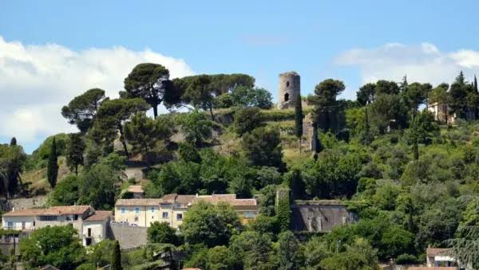
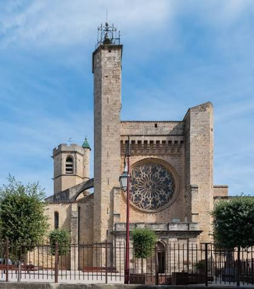

Clermont-l'Hérault
Cité Médiévale


⟹ Château · Saint-Paul · Salagou ⟸

Un carrefour naturel au cœur de l'Hérault. Clermont-l'Hérault occupe une position privilégiée entre la vallée de l'Hérault, les premiers reliefs du Lodévois et les terres rouges du bassin du Salagou. À la croisée des routes reliant le littoral méditerranéen, Béziers, Lodève et les hauts cantons, la ville s'est développée très tôt comme un lieu de passage, d'échanges et de marché. Son paysage est dominé par le Puech Castel, colline sur laquelle s'élèvent les vestiges du château des Guilhem.
Des occupations protohistoriques très anciennes. Bien avant la naissance de la ville médiévale, le territoire clermontais est occupé par des populations protohistoriques. Sur la colline de La Ramasse, les fouilles archéologiques ont mis en évidence un oppidum daté principalement entre les VIe et IIIe siècles avant notre ère. Des stèles découvertes en remploi dans sa muraille témoignent de pratiques et d'aménagements antérieurs à la conquête romaine.
Peyre-Plantade, l'agglomération antique. À l'époque gallo-romaine, l'habitat principal se déplace vers la plaine, sur le site de Peyre-Plantade. Une importante agglomération se développe le long d'une voie romaine reliant le secteur de Saint-Thibéry à l'intérieur du Massif central. Les recherches archéologiques ont révélé des vestiges d'habitat, un établissement thermal et, dans les environs, plusieurs domaines ruraux. Le territoire clermontais s'inscrit alors dans un réseau actif de circulation des hommes, des marchandises, du vin et du bétail.
XIe-XIIe siècles : naissance de la ville actuelle. Clermont prend véritablement sa forme urbaine au Moyen Âge. Une puissante famille seigneuriale, les Guilhem de Clermont, installe son pouvoir sur la colline du Puech Castel. Un acte du cartulaire de l'abbaye de Gellone, vers 1140, mentionne Clermont comme une ville et un marché, preuve de sa vocation commerciale déjà affirmée. Le château est cité en 1158.

Les Guilhem et la fortification de Clermont. Aimeric de Clermont, attesté dès 1128, comprend l'intérêt stratégique du site. Entre le XIIe et la fin du XIIIe siècle, le château est agrandi et fortifié. La ville se protège également derrière une enceinte de plus d'un kilomètre, ponctuée de tours et percée de plusieurs portes. Le plan circulaire du centre ancien conserve aujourd'hui la mémoire de cette ceinture défensive.
Une ville de marchands, d'artisans et de drapiers. Au XIIIe siècle, Clermont connaît un essor économique important. Marchés et foires attirent les populations des campagnes environnantes. Le long du Rhônel s'installent des moulins à blé, des moulins drapiers et des tanneries. Le travail de la laine et la fabrication des draps prennent progressivement une place essentielle dans l'économie locale.
Franchises communales et tensions féodales. Les habitants obtiennent des libertés et franchises de leurs seigneurs. Après une révolte en 1242, certaines sont supprimées avant d'être rétablies par la transaction de 1347. Dans le même temps, les évêques de Lodève imposent progressivement leur suzeraineté aux Guilhem de Clermont, illustrant les rivalités de pouvoir qui structurent le Languedoc médiéval.
L'église Saint-Paul, monument majeur du gothique méridional. Le chantier de l'actuelle église Saint-Paul commence vers 1275 sur l'emplacement d'un édifice plus ancien. Sa construction s'étend sur près d'un siècle et demi. Sa grande rosace flamboyante, achevée au début du XVe siècle, constitue l'un des éléments les plus remarquables de l'édifice. L'église est classée au titre des Monuments historiques dès 1840.
Une ville qui dépasse ses remparts. À partir de la fin du XIIIe siècle, les faubourgs s'étendent autour des établissements religieux et le long du Rhônel. Les Bénédictines de Gorjan et les Dominicains participent à cette extension urbaine. Plusieurs maisons et hôtels des XIVe et XVe siècles subsistent encore dans le centre ancien, notamment autour des rues Bozène et Filandière.
Les guerres de Religion. Aux XVIe et XVIIe siècles, Clermont est prise dans les affrontements qui déchirent le Languedoc. La ville et son château connaissent plusieurs épisodes militaires. En 1584, le château résiste pendant quatre jours au siège du duc de Montmorency et sert de refuge à la population. Clermont devient un temps une place de sûreté protestante avant le rétablissement de l'autorité royale.
XVIIe-XVIIIe siècles : l'âge du drap. L'industrie textile devient l'un des moteurs majeurs de la ville. Les manufactures profitent de la force motrice du Rhônel et de la tradition lainière du Clermontais. La politique manufacturière menée sous Colbert et la création toute proche de la Manufacture royale de Villeneuvette renforcent cette spécialisation régionale. Drapiers, teinturiers, tanneurs et négociants façonnent durablement la société clermontaise.
Le déclin du château. Abandonné comme résidence seigneuriale à l'époque moderne, le château des Guilhem se dégrade progressivement. Au XVIIIe siècle, une grande partie de ses bâtiments a déjà disparu. Il ne subsiste aujourd'hui que des éléments de l'enceinte, plusieurs tours et le puissant donjon connu sous le nom de Tour Guilhem. La commune rachète le site en 2020 et le rouvre au public en 2021 après sécurisation.

XIXe siècle : transformations urbaines et industrielles. Comme de nombreuses villes du Languedoc, Clermont se transforme avec l'amélioration des routes, le développement des échanges et l'évolution des activités textiles et viticoles. Les anciens remparts perdent progressivement leur fonction défensive, tandis que de nouvelles places, voies et équipements structurent la ville moderne.
Le vignoble et les crises agricoles. La vigne occupe une place importante dans l'économie du Clermontais aux XIXe et XXe siècles. La crise du phylloxéra, puis les grandes tensions viticoles du Midi, bouleversent durablement le monde rural. La viticulture demeure toutefois une composante essentielle du paysage et du terroir local, aujourd'hui représentée par plusieurs appellations languedociennes.
1969 : la naissance du lac du Salagou. À quelques kilomètres de la ville, la mise en eau du barrage du Salagou transforme profondément le paysage. Conçu à l'origine pour réguler les eaux et soutenir l'agriculture, le lac devient progressivement l'un des sites naturels et touristiques majeurs de l'Hérault. Ses terres rouges, appelées ruffes, contrastent avec le bleu de l'eau et donnent au bassin du Salagou son identité paysagère exceptionnelle.
Clermont-l'Hérault aujourd'hui. Avec 9 461 habitants en 2023, Clermont-l'Hérault demeure un pôle commercial et de services important du cœur de l'Hérault. Sa singularité vient de la superposition de plusieurs héritages : oppidum protohistorique, agglomération romaine, cité féodale des Guilhem, ville drapière et viticole, puis porte d'entrée du Grand Site du Salagou. Cette continuité entre patrimoine médiéval, vie commerçante et paysages du Salagou constitue l'une des grandes forces de son identité.
« Du château des Guilhem aux ruffes du Salagou, Clermont-l'Hérault raconte plus de deux millénaires d'occupation et d'échanges. »
Repères historiques et patrimoniauxLes Guilhem de Clermont sont indissociables de la naissance de la ville médiévale. Installée sur le Puech Castel, cette puissante famille seigneuriale contrôle Clermont à partir du XIIe siècle et donne son nom au château qui domine encore aujourd'hui la cité.
Aimeric de Clermont, attesté au XIIe siècle, incarne l'affirmation de cette dynastie. Par son implantation stratégique, la famille s'insère dans le jeu politique du Languedoc, entre les seigneurs de Montpellier, le comte de Toulouse et les évêques de Lodève.
Les drapiers, tanneurs, meuniers et négociants constituent une autre mémoire essentielle de Clermont-l'Hérault. Pendant plusieurs siècles, leur activité anime les berges du Rhônel, les marchés et les rues commerçantes. L'histoire de la ville est autant celle de ses artisans que celle de ses seigneurs.
La mémoire locale reste également liée aux vignerons du Clermontais, qui ont façonné les campagnes alentour, ainsi qu'aux habitants des villages et hameaux bouleversés par la création du lac du Salagou à la fin des années 1960.
Accès : Clermont-l'Hérault se situe dans le cœur de l'Hérault, à proximité immédiate de l'A75, à environ 45 km de Montpellier et une cinquantaine de kilomètres de Béziers.
Office de tourisme : Office de Tourisme Destination Salagou, place Jean-Jaurès, 34800 Clermont-l'Hérault. Il renseigne sur les visites patrimoniales, le lac du Salagou, les randonnées, les domaines viticoles et les villages du Clermontais.
Découverte du centre : le cœur historique se visite facilement à pied. L'itinéraire naturel relie l'église Saint-Paul, les anciennes portes, les ruelles médiévales puis le château des Guilhem.
Château des Guilhem : le site domine la ville depuis le Puech Castel. L'accès implique une montée ; prévoir des chaussures adaptées et rester prudent par forte chaleur.
Lac du Salagou : situé à quelques kilomètres à l'ouest et au nord-ouest du centre selon les accès. Baignade, randonnée, VTT, activités nautiques et observation des paysages permettent de prolonger facilement la visite de Clermont-l'Hérault.